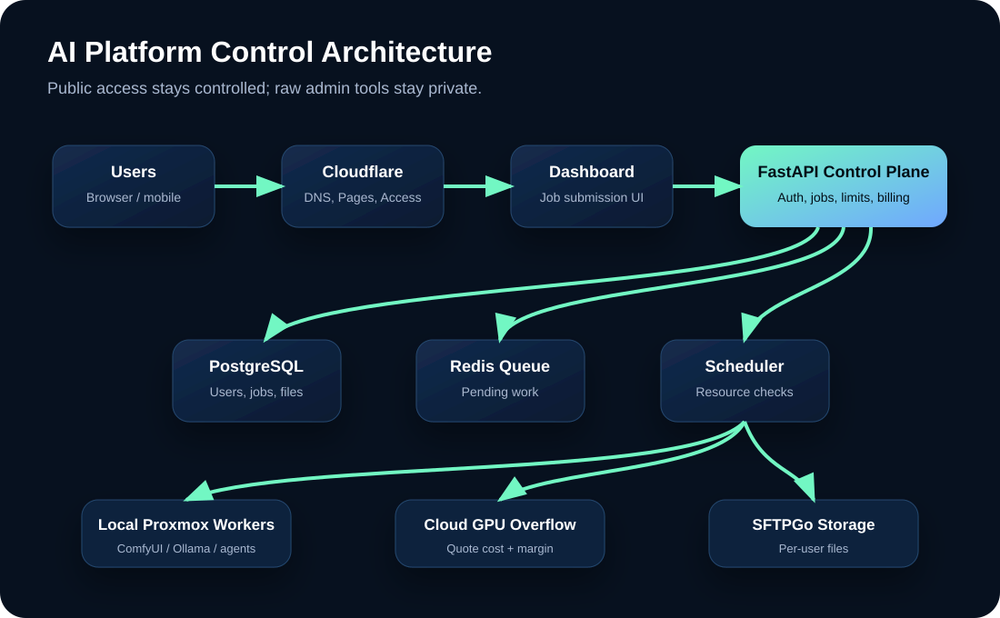
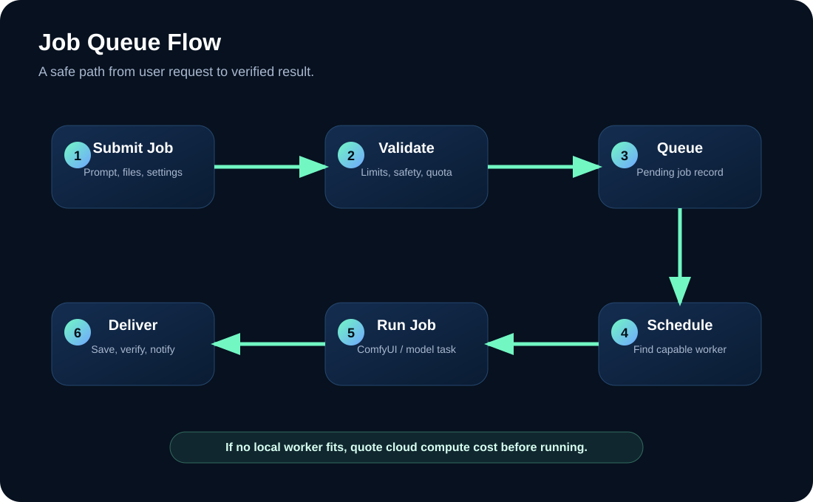

AI Services
Public dashboard for AI image, chat, file, and future video-generation workflows.
Local-first distributed AI infrastructure
Start with your own Proxmox workers, ComfyUI, OpenWebUI, and per-user storage. When demand grows, route jobs through a queue and expand to more local machines or cloud GPU workers.
Overview
This site is designed to live in its own GitHub repository and deploy through Cloudflare Pages.
Your current locally hosted website can stay exactly how it is while this project gets a separate domain,
such as platform.alexhartel.com.
Public dashboard for AI image, chat, file, and future video-generation workflows.
Every expensive action becomes a queued job so workers can process tasks safely.
Local computers, Proxmox containers, and future cloud GPUs can join as workers.
Services
Users submit prompts through a controlled dashboard. Jobs are queued, assigned to workers, and saved to per-user storage.
Provide chat access while keeping model routing, user limits, and admin controls behind your own platform.
Give users their own upload/download area with future checksum verification and encryption options.
Before a job runs, the scheduler checks worker CPU, RAM, VRAM, disk space, active jobs, and supported job types.
Architecture
The public dashboard should not expose raw ComfyUI or raw admin tools. Users submit jobs to your platform API. The scheduler then chooses the best worker.


Queue
The queue lets the platform say: “This worker has enough resources; run the job there.” If not, the job waits or gets quoted for cloud execution.
Business model
Local workers handle cheap jobs first. If local capacity is full or a job requires more GPU power, the platform can quote cloud compute cost, add a margin, and only run after the user accepts.
$ Low cost
Cloud quote + 25%
Subscription
Roadmap
Deploy this static site to Cloudflare Pages through GitHub.
Create FastAPI, health checks, PostgreSQL schema, and Redis queue.
Submit a text-to-image job and retrieve the result safely.
Install agents that report resources and accept compatible jobs.
Add SFTPGo-backed file spaces, checksums, and upload hooks.
Quote cloud jobs, apply markup, and track cost/profit per job.
Next step
Once connected, every GitHub push can trigger a new deployment and every branch can get a preview URL for testing.
Back to top